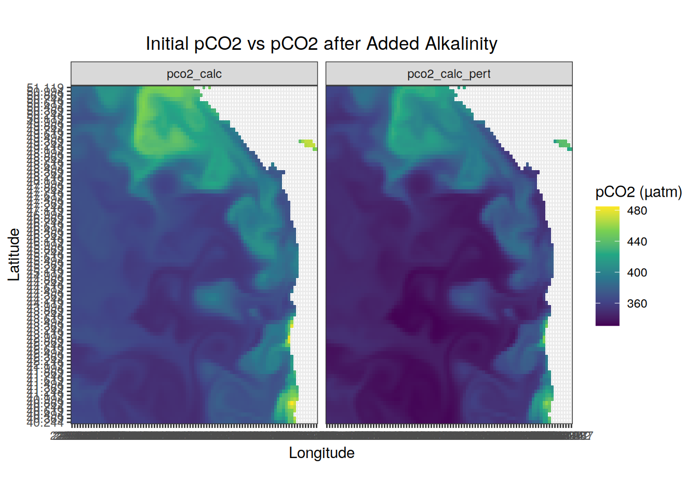
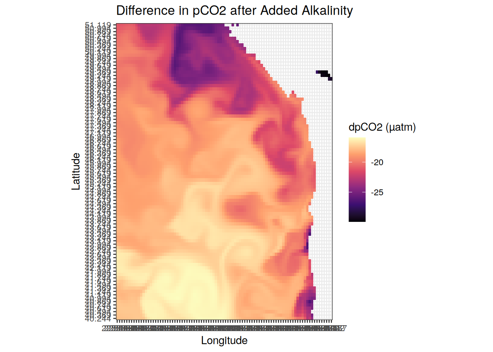

Data practice
Victoria Froh & Jens Daniel Müller
22 November, 2024
Last updated: 2024-11-22
Checks: 7 0
Knit directory: oae_ccs_roms/
This reproducible R Markdown analysis was created with workflowr (version 1.7.0). The Checks tab describes the reproducibility checks that were applied when the results were created. The Past versions tab lists the development history.
Great! Since the R Markdown file has been committed to the Git repository, you know the exact version of the code that produced these results.
Great job! The global environment was empty. Objects defined in the global environment can affect the analysis in your R Markdown file in unknown ways. For reproduciblity it’s best to always run the code in an empty environment.
The command set.seed(20240919) was run prior to running
the code in the R Markdown file. Setting a seed ensures that any results
that rely on randomness, e.g. subsampling or permutations, are
reproducible.
Great job! Recording the operating system, R version, and package versions is critical for reproducibility.
Nice! There were no cached chunks for this analysis, so you can be confident that you successfully produced the results during this run.
Great job! Using relative paths to the files within your workflowr project makes it easier to run your code on other machines.
Great! You are using Git for version control. Tracking code development and connecting the code version to the results is critical for reproducibility.
The results in this page were generated with repository version 085eee2. See the Past versions tab to see a history of the changes made to the R Markdown and HTML files.
Note that you need to be careful to ensure that all relevant files for
the analysis have been committed to Git prior to generating the results
(you can use wflow_publish or
wflow_git_commit). workflowr only checks the R Markdown
file, but you know if there are other scripts or data files that it
depends on. Below is the status of the Git repository when the results
were generated:
Ignored files:
Ignored: .Rhistory
Ignored: .Rproj.user/
Unstaged changes:
Modified: code/Workflowr_project_managment.R
Note that any generated files, e.g. HTML, png, CSS, etc., are not included in this status report because it is ok for generated content to have uncommitted changes.
These are the previous versions of the repository in which changes were
made to the R Markdown (analysis/read_data.Rmd) and HTML
(docs/read_data.html) files. If you’ve configured a remote
Git repository (see ?wflow_git_remote), click on the
hyperlinks in the table below to view the files as they were in that
past version.
| File | Version | Author | Date | Message |
|---|---|---|---|---|
| html | 3516414 | vgfroh | 2024-11-22 | Build site. |
| html | 7c47c0f | vgfroh | 2024-11-22 | Build site. |
| html | c12634a | vgfroh | 2024-11-21 | Build site. |
| Rmd | 163f18c | vgfroh | 2024-11-21 | rebuild after code update and new enso file |
| html | 3aadd37 | jens-daniel-mueller | 2024-11-18 | Build site. |
| html | 02a42aa | jens-daniel-mueller | 2024-11-18 | Build site. |
| Rmd | c904225 | jens-daniel-mueller | 2024-11-18 | rebuild after code review |
| html | 3facddd | jens-daniel-mueller | 2024-11-18 | Build site. |
| html | b305702 | jens-daniel-mueller | 2024-11-18 | Build site. |
| Rmd | be4b879 | jens-daniel-mueller | 2024-11-18 | rebuild after code review |
| html | 2509718 | jens-daniel-mueller | 2024-11-18 | Build site. |
| html | 9508443 | vgfroh | 2024-11-15 | Build site. |
| html | 2c9eb7e | vgfroh | 2024-11-15 | Build site. |
| html | fa48b39 | vgfroh | 2024-11-15 | Build site. |
| html | 36f52b0 | vgfroh | 2024-11-05 | Build site. |
| html | 77644c3 | vgfroh | 2024-10-02 | Build site. |
| Rmd | e6e5240 | vgfroh | 2024-10-02 | Plots after perturbations |
| html | 95e822c | vgfroh | 2024-10-01 | Build site. |
| Rmd | 7dd8327 | vgfroh | 2024-10-01 | Comparing model and calculated pCO2 |
| html | 1271b4b | vgfroh | 2024-09-30 | Build site. |
| Rmd | 5dd4857 | vgfroh | 2024-09-30 | Running the carb function |
| html | a2f17f6 | vgfroh | 2024-09-25 | Build site. |
| Rmd | 7f8a0c8 | vgfroh | 2024-09-25 | Alk and DIC maps of surface at t=1 |
| html | f421914 | vgfroh | 2024-09-19 | Build site. |
| Rmd | f7fc26f | vgfroh | 2024-09-19 | first map but i cleaned up the code |
| html | 5eca06c | vgfroh | 2024-09-19 | Build site. |
| Rmd | c9f35a0 | vgfroh | 2024-09-19 | first map |
| html | 16549e7 | vgfroh | 2024-09-19 | Build site. |
| Rmd | 210c100 | vgfroh | 2024-09-19 | setup project |
| html | 2e8d326 | jens-daniel-mueller | 2024-09-19 | Build site. |
| html | 7591977 | jens-daniel-mueller | 2024-09-19 | Build site. |
| Rmd | a97392c | jens-daniel-mueller | 2024-09-19 | setup project |
Read this
Practice working with OAE ROMS data
#loading packages
library(ncdf4)
library(tidync)
library(stars)
library(tidyverse)
library(seacarb)
library(metR)
#For the regridded standard files, path:
path_ROMSv2RG_results <-
"/net/sea/work/loher/ROMS/Alk_enh_formatted_2024_08/"
#opening specific nc file to get overview (Columbia site, 1x)
view_nc <- nc_open(paste0(path_ROMSv2RG_results,
"ColumbiaRiver/ColumbiaRiver_2010-2015_1x.nc"))
print(view_nc)#filtering for just one variable w/ stars package + time and depth slice
nc_alk <- read_ncdf(paste0(path_ROMSv2RG_results,
"ColumbiaRiver/ColumbiaRiver_2010-2015_1x.nc"),
var = "Alk",
ncsub = cbind(start = c(1, 1, 1, 1), count = c(96, 88, 1, 1)
),
proxy = FALSE #need this on to override the proxy format
)Warning: ignoring unrecognized unit: mMol m-3nc_dic <- read_ncdf(paste0(path_ROMSv2RG_results,
"ColumbiaRiver/ColumbiaRiver_2010-2015_1x.nc"),
var = "DIC",
ncsub = cbind(start = c(1, 1, 1, 1), count = c(96, 88, 1, 1)
),
proxy = FALSE #need this on to override the proxy format
)Warning: ignoring unrecognized unit: mMol C m-3#creating a blank plot and loading in the nc data layers
ggplot() +
geom_stars(data = nc_alk, aes(fill = Alk)) +
labs(title = "Columbia River Surface Alkalinity @ T1",
x = "Longitude",
y = "Latitude") +
theme_bw() +
scale_fill_viridis_c() +
coord_quickmap(expand = 0)
| Version | Author | Date |
|---|---|---|
| c12634a | vgfroh | 2024-11-21 |
ggplot() +
geom_stars(data = nc_dic, aes(fill = DIC)) +
labs(title = "Columbia River Surface DIC @ T1",
x = "Longitude",
y = "Latitude") +
theme_bw() +
scale_fill_viridis_c() +
coord_quickmap(expand = 0)
| Version | Author | Date |
|---|---|---|
| c12634a | vgfroh | 2024-11-21 |
nc <- tidync(paste0(path_ROMSv2RG_results,
"ColumbiaRiver/ColumbiaRiver_2010-2015_1x.nc"))
#filtering nc file for just the surface @ the first time index, outputting tbl_df
alk_surface_t1 <- nc %>%
hyper_filter(depth = index == 1, time = index == 1) %>%
hyper_tibble(select_var = c("Alk"))
dic_surface_t1 <- nc %>%
hyper_filter(depth = index == 1, time = index == 1) %>%
hyper_tibble(select_var = c("DIC"))
#plotting variables
ggplot(data = alk_surface_t1) +
geom_tile(aes(lon, lat, fill = Alk)) +
labs(title = "Columbia River Surface Alkalinity @ T1",
x = "Longitude", y = "Latitude") +
theme_bw() +
scale_fill_viridis_c() +
coord_quickmap(expand = 0)
| Version | Author | Date |
|---|---|---|
| c12634a | vgfroh | 2024-11-21 |
ggplot(data = dic_surface_t1) +
geom_tile(aes(lon, lat, fill = DIC)) +
labs(title = "Columbia River Surface DIC @ T1",
x = "Longitude", y = "Latitude") +
theme_bw() +
scale_fill_viridis_c() +
coord_quickmap(expand = 0)
| Version | Author | Date |
|---|---|---|
| c12634a | vgfroh | 2024-11-21 |
#load in data from tidync file in main active grid w/ T1 surface slice
surface_data <- nc %>%
hyper_filter(depth = index == 1, time = index == 1) %>%
hyper_tibble(force = TRUE)
#loading in data in other grid ie surface variables
surface_data_pco2 <- nc %>%
activate("D1,D2,D0") %>% #activating surface grid for PCO2OC variable
hyper_filter(time = index == 1) %>%
hyper_tibble(select_var = c("PCO2OC"), # produces a tibble object
force = TRUE)
merged_surface <- full_join(surface_data, surface_data_pco2)
#running carb to produce the pCO2 values
merged_surface_orig <-
merged_surface %>%
#head(6) %>% #testing subsset
drop_na() %>% #drops all rows with an NA
mutate(
pco2_calc = carb(
flag = 15,
var1 = Alk * 1e-6 / 1.02518,
var2 = DIC * 1e-6 / 1.02518,
S = salt,
T = temp,
P = 0,
#surface = 0
Pt = PO4 * 1e-6 / 1.02518,
Sit = SiO3 * 1e-6 / 1.02518,
kf="dg",
k1k2="m06",
ks="d"
)$pCO2 #to just save the pco2 output
)
#plotting pco2
ggplot(data = merged_surface_orig) +
geom_tile(aes(lon, lat, fill = pco2_calc)) +
labs(title = "Columbia River Calculated PCO2 @ T1",
x = "Longitude", y = "Latitude", fill = "pCO2 (µatm)") +
theme_bw() +
theme(plot.title = element_text(hjust = 0.5)) +
scale_fill_viridis_c() +
coord_quickmap(expand = 0)
| Version | Author | Date |
|---|---|---|
| c12634a | vgfroh | 2024-11-21 |
#Comparing Outputs
#New dataframe w/ reorganized pCO2 data
pco2_compare <- merged_surface_orig %>%
select(lon, lat, pco2_calc, PCO2OC) %>%
pivot_longer(
cols = c(pco2_calc, PCO2OC),
names_to = "Variant",
values_to = "pCO2"
)
#Plotting side-by-side comparison
ggplot(data = pco2_compare) +
geom_tile(aes(lon, lat, fill = pCO2)) +
facet_grid(cols = vars(Variant)) +
labs(title = "Calculated pCO2 vs Model pCO2",
x = "Longitude", y = "Latitude", fill = "pCO2 (µatm)") +
theme_bw() +
theme(plot.title = element_text(hjust = 0.5)) +
coord_quickmap(expand = 0) +
scale_fill_viridis_c()
| Version | Author | Date |
|---|---|---|
| c12634a | vgfroh | 2024-11-21 |
#New df w/ the difference between model and calculated pCO2
pco2_delta <- merged_surface_orig %>%
select(lon, lat, pco2_calc, PCO2OC) %>%
mutate(dpco2 = PCO2OC - pco2_calc)
#Plotting difference
ggplot(data = pco2_delta) +
geom_tile(aes(lon, lat, fill = dpco2)) +
labs(title = "Model pCO2 - Calculated pCO2",
x = "Longitude", y = "Latitude", fill = "dpCO2 (µatm)") +
scale_fill_divergent() +
coord_quickmap(expand = 0) +
theme(plot.title = element_text(hjust = 0.5)) +
theme_bw()
| Version | Author | Date |
|---|---|---|
| c12634a | vgfroh | 2024-11-21 |
#Perturbation of 10 mmol Alk/m^3 in all grid cells
surface_pert <-
merged_surface_orig %>%
#head(6) %>% #testing subsset
drop_na() %>% #drops all rows with an NA
mutate(
pco2_calc_pert = carb(
flag = 15,
var1 = (Alk + 10) * 1e-6 / 1.02518,
var2 = DIC * 1e-6 / 1.02518,
S = salt,
T = temp,
P = 0,
Pt = PO4 * 1e-6 / 1.02518,
Sit = SiO3 * 1e-6 / 1.02518,
kf="dg",
k1k2="m06",
ks="d"
)$pCO2
)
#New dataframe w/ reorganized pCO2_pert data to compare
pco2_pert_compare <- surface_pert %>%
select(lon, lat, pco2_calc_pert, pco2_calc) %>%
pivot_longer(
cols = c(pco2_calc_pert, pco2_calc),
names_to = "Variant",
values_to = "pCO2"
)
#Plotting side-by-side comparison
ggplot(data = pco2_pert_compare) +
geom_tile(aes(lon, lat, fill = pCO2)) +
facet_grid(cols = vars(Variant)) +
labs(title = "Initial pCO2 vs pCO2 after Added Alkalinity",
x = "Longitude", y = "Latitude", fill = "pCO2 (µatm)") +
theme_bw() +
theme(plot.title = element_text(hjust = 0.5)) +
coord_quickmap(expand = 0) +
scale_fill_viridis_c()
| Version | Author | Date |
|---|---|---|
| c12634a | vgfroh | 2024-11-21 |
#New df w/ the difference in pCO2 after Alk perturbation
pco2_pert_delta <- full_join(surface_pert, pco2_delta) %>%
select(lon, lat, pco2_calc_pert, pco2_calc) %>%
mutate(dpco2 = pco2_calc_pert - pco2_calc)
#Plotting difference
ggplot(data = pco2_pert_delta) +
geom_tile(aes(lon, lat, fill = dpco2)) +
labs(title = "Difference in pCO2 after Added Alkalinity",
x = "Longitude", y = "Latitude", fill = "dpCO2 (µatm)") +
#scale_fill_divergent() +
scale_fill_viridis_c(option = "magma") +
coord_quickmap(expand = 0) +
theme(plot.title = element_text(hjust = 0.5)) +
theme_bw()
| Version | Author | Date |
|---|---|---|
| c12634a | vgfroh | 2024-11-21 |
#Alooking at how DIC changes for perturbation with constant pCO2
surface_pert_dic <-
merged_surface_orig %>%
#head(6) %>% #testing subsset
drop_na() %>% #drops all rows with an NA
mutate(
DIC_pert = carb(
flag = 24,
var1 = pco2_calc, # for consistency, use the calculate pCO2 here,
#otherwise you compute a DIC perturbation that is partly due to
#differences in the computational routines (vs the model)
var2 = (Alk + 10) * 1e-6 / 1.02518,
S = salt,
T = temp,
P = 0,
#surface = 0
Pt = PO4 * 1e-6 / 1.02518,
Sit = SiO3 * 1e-6 / 1.02518,
kf="dg",
k1k2="m06",
ks="d"
)$DIC #to just save the pco2 output
* 1.02518 * 1e6 #converting back to model units of mmol/m^3
)
#New dataframe w/ reorganized DIC data to compare
dic_pert_compare <- surface_pert_dic %>%
select(lon, lat, DIC_pert, DIC) %>%
pivot_longer(
cols = c(DIC_pert, DIC),
names_to = "Variant",
values_to = "DIC"
)
#Plotting side-by-side comparison
ggplot(data = dic_pert_compare) +
geom_tile(aes(lon, lat, fill = DIC)) +
facet_grid(cols = vars(Variant)) +
labs(title = "Initial Model DIC vs DIC after Added Alkalinity",
x = "Longitude", y = "Latitude", fill = "DIC (mmol/m^3)") +
theme_bw() +
theme(plot.title = element_text(hjust = 0.5)) +
coord_quickmap(expand = 0) +
scale_fill_viridis_c()
| Version | Author | Date |
|---|---|---|
| c12634a | vgfroh | 2024-11-21 |
#New df w/ the difference in DIC after Alk perturbation
dic_pert_delta <- surface_pert_dic %>%
select(lon, lat, DIC_pert, DIC) %>%
mutate(dDIC = DIC_pert - DIC)
#Plotting difference
ggplot(data = dic_pert_delta) +
geom_tile(aes(lon, lat, fill = dDIC)) +
labs(title = "Difference in DIC after Added Alkalinity",
x = "Longitude", y = "Latitude", fill = "dDIC (mmol/m^3)") +
#scale_fill_divergent() +
scale_fill_viridis_c(option = "magma", direction = -1) +
coord_quickmap(expand = 0) +
theme_bw() +
theme(plot.title = element_text(hjust = 0.5))
| Version | Author | Date |
|---|---|---|
| c12634a | vgfroh | 2024-11-21 |
sessionInfo()R version 4.2.2 (2022-10-31)
Platform: x86_64-pc-linux-gnu (64-bit)
Running under: openSUSE Leap 15.5
Matrix products: default
BLAS: /usr/local/R-4.2.2/lib64/R/lib/libRblas.so
LAPACK: /usr/local/R-4.2.2/lib64/R/lib/libRlapack.so
locale:
[1] LC_CTYPE=en_US.UTF-8 LC_NUMERIC=C
[3] LC_TIME=en_US.UTF-8 LC_COLLATE=en_US.UTF-8
[5] LC_MONETARY=en_US.UTF-8 LC_MESSAGES=en_US.UTF-8
[7] LC_PAPER=en_US.UTF-8 LC_NAME=C
[9] LC_ADDRESS=C LC_TELEPHONE=C
[11] LC_MEASUREMENT=en_US.UTF-8 LC_IDENTIFICATION=C
attached base packages:
[1] stats graphics grDevices utils datasets methods base
other attached packages:
[1] metR_0.13.0 seacarb_3.3.3 SolveSAPHE_2.1.0 oce_1.7-10
[5] gsw_1.1-1 forcats_0.5.2 stringr_1.5.0 dplyr_1.1.3
[9] purrr_1.0.2 readr_2.1.3 tidyr_1.3.0 tibble_3.2.1
[13] ggplot2_3.4.4 tidyverse_1.3.2 stars_0.6-0 sf_1.0-9
[17] abind_1.4-5 tidync_0.4.0 ncdf4_1.19 workflowr_1.7.0
loaded via a namespace (and not attached):
[1] fs_1.5.2 lubridate_1.9.0 httr_1.4.4
[4] rprojroot_2.0.3 tools_4.2.2 backports_1.4.1
[7] bslib_0.4.1 utf8_1.2.2 R6_2.5.1
[10] KernSmooth_2.23-20 DBI_1.1.3 colorspace_2.0-3
[13] withr_2.5.0 tidyselect_1.2.0 processx_3.8.0
[16] compiler_4.2.2 git2r_0.30.1 cli_3.6.1
[19] rvest_1.0.3 RNetCDF_2.6-1 xml2_1.3.3
[22] labeling_0.4.2 sass_0.4.4 checkmate_2.1.0
[25] scales_1.2.1 classInt_0.4-8 callr_3.7.3
[28] proxy_0.4-27 digest_0.6.30 rmarkdown_2.18
[31] pkgconfig_2.0.3 htmltools_0.5.3 highr_0.9
[34] dbplyr_2.2.1 fastmap_1.1.0 rlang_1.1.1
[37] readxl_1.4.1 rstudioapi_0.15.0 PCICt_0.5-4.3
[40] farver_2.1.1 jquerylib_0.1.4 generics_0.1.3
[43] jsonlite_1.8.3 googlesheets4_1.0.1 magrittr_2.0.3
[46] ncmeta_0.3.5 Rcpp_1.0.10 munsell_0.5.0
[49] fansi_1.0.3 lifecycle_1.0.3 stringi_1.7.8
[52] whisker_0.4 yaml_2.3.6 grid_4.2.2
[55] parallel_4.2.2 promises_1.2.0.1 crayon_1.5.2
[58] CFtime_1.4.0 haven_2.5.1 hms_1.1.2
[61] knitr_1.41 ps_1.7.2 pillar_1.9.0
[64] reprex_2.0.2 glue_1.6.2 evaluate_0.18
[67] getPass_0.2-2 data.table_1.14.6 modelr_0.1.10
[70] vctrs_0.6.4 tzdb_0.3.0 httpuv_1.6.6
[73] cellranger_1.1.0 gtable_0.3.1 assertthat_0.2.1
[76] cachem_1.0.6 xfun_0.35 lwgeom_0.2-10
[79] broom_1.0.5 e1071_1.7-12 later_1.3.0
[82] viridisLite_0.4.1 class_7.3-20 googledrive_2.0.0
[85] gargle_1.2.1 memoise_2.0.1 units_0.8-0
[88] timechange_0.1.1 ellipsis_0.3.2